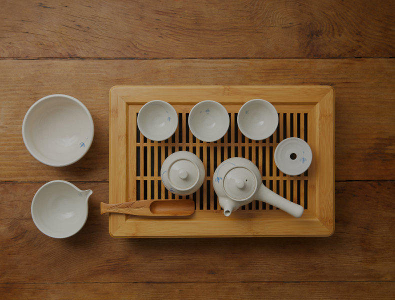

To fully savor the rich history of tea, it is essential to employ utensils suitable for this purpose. Drinking tea has traditionally symbolized a spiritual journey and has long adhered to established etiquette.
Therefore, using tea-related utensils in a manner aligned with their intended purpose and method can also be regarded as a form of etiquette.

The Grace of
Tranditional Teapots
1. Dagwan
The primary kettle for steeping tea.
2. Sookwoo
A vessel for pouring and cooling tea to prevent excessive strength.
3. Toesuban
Used for discarding water, tea leaves, and other waste.
4. Chaho
A jar for storing tea leaves.
5. Chachik
A spoon employed for scooping tea leaves.
6. Chajan
A cup designed for enjoying steeped tea.
7. Daban
A tray or platform to accommodate teapots.
8. Chapo
A cloth or mat placed on the tea table or tray.